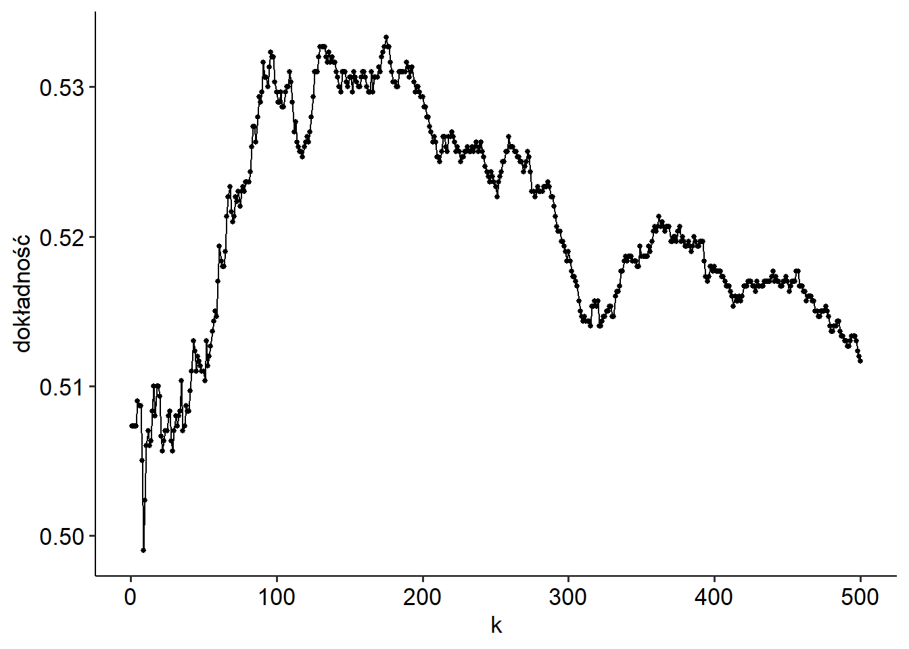
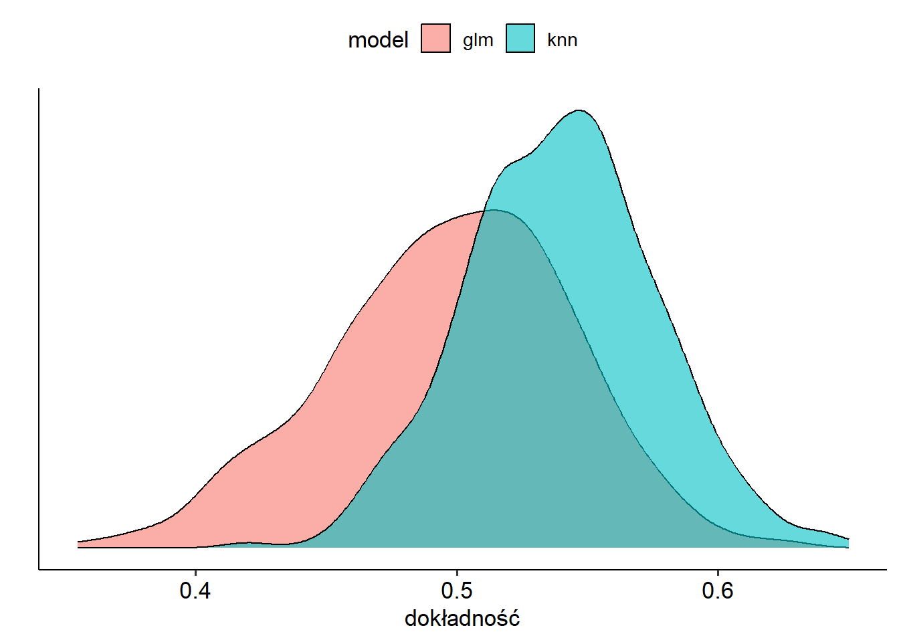
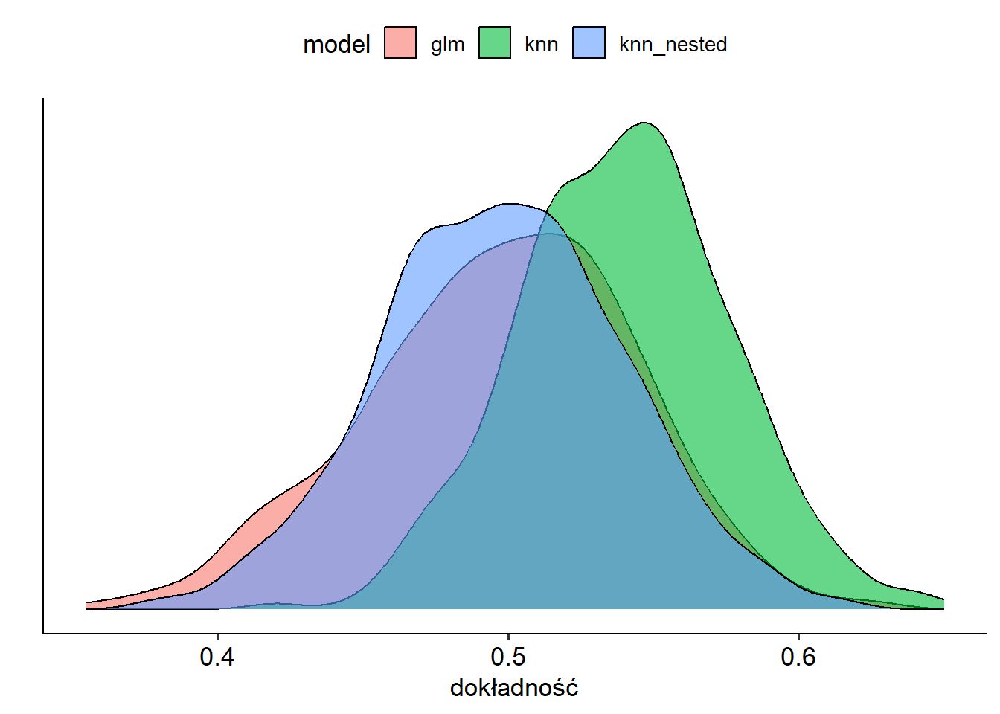

O zagnieżdżonej walidacji krzyżowej
Chcemy policzyć średni wzrost człowieka. Bierzemy próbę losową z populacji i liczymy średnią arytmetyczną. Jest to dobry estymator rzeczywistej średniej. Co prawda prawie na pewno nie dostaniemy dokładnego wyniku, ale średnio rzecz biorąc, nie będzie ani przeszacowany, ani niedoszacowany.
Powtórzmy jednak tę procedurę 100 razy, tzn. bierzemy wiele prób i z każdej liczymy średnią. Oczywiście każda z nich jest dobrym estymatorem średniej populacyjnej. Ale teraz, z jakiegoś powodu, wybierzmy największą z tych 100 średnich. To już nie jest dobry estymator średniej, wynik będzie prawie na pewno przeszacowany.
Dzięki temu przykładowi łatwiej będzie zrozumieć, co za chwilę się wydarzy.
Dane
Poniżej symuluję proste dane dla problemu klasyfikacyjnego. 5 predyktorów, 10 tysięcy obserwacji, połowa należy do jednej klasy, połowa do drugiej. Wartości predyktorów losuję z rozkładu normalnego (choć to nie jest tu ważne). Klasy przyporządkowuję zupełnie losowo, tzn. nie mają żadnego związku z predyktorami.
Użyję dwóch modeli, regresji logistycznej i KNN. Porównam je przy pomocy dokładności (accuracy). I ponieważ w danych nie ma żadnego sygnału, tylko szum, oczekuję wyniku na poziomie 0,5.
Wydzielam nietypowo duży zbiór testowy (9 tysięcy obserwacji). Potraktujmy go jednak NIE jako klasyczny zbiór testowy, na którym dokonuje się ostatecznej ewaluacji modelu. Zamiast tego załóżmy, że mamy dostęp tylko do zbioru treningowego (tysiąc obserwacji). Ten rzekomy zbiór testowy to nowe dane, które napłyną w przyszłości — i nie mamy do nich dostępu.
W takim razie, skoro mamy tylko tysiąc obserwacji, podejmujemy decyzję (poniekąd słuszną), że nie będziemy wydzielać “prawdziwego” zbioru testowego. Żeby jednak wiarygodnie ocenić, jak dobry jest model, użyjemy walidacji krzyżowej (5-fold CV, powtarzane 3 razy).
Regresja logistyczna vs. KNN
Używając regresji logistycznej, otrzymałem dokładność 0,5, jak należało się spodziewać. Ale może da się lepiej? Może wyciągniemy coś z tego szumu, dopasowując “lepszy” model? Spróbujmy z KNN. Poniżej dokładność dla różnej liczby sąsiadów.

Wygląda na to, że się udało, KNN zauważył coś w danych. Dla 175 sąsiadów dokładność wynosi 0,53. Błąd standardowy jest niski (0,007), więc można powiedzieć, że KNN jest tu istotnie lepszy regresji logistycznej (choć R niepoprawnie liczy błąd standardowy, zakładając, że szacowane dokładności są niezależne, podczas gdy stosowaliśmy powtarzaną kroswalidację).
Oczywiście tak naprawdę to regresja logistyczna jest lepsza, bo przecież nie ma tu żadnego sygnału. Ale skąd mamy to wiedzieć, przecież w rzeczywistości nie znamy modelu, który tworzył dane. W takim razie ufamy temu, co otrzymaliśmy, i sprzedajemy klientowi model KNN, mówiąc, że “działa”. Co prawda wydaje się, że kiepsko, ale to oczywiście kwestia relatywna. Te 3 punkty procentowe ponad rzut monetą mogą przełożyć się na realny zysk.
Co na to klient?
Klient stosuje model na nowych danych. Uruchomiłem go na tych 9 tysiącach obserwacji, które wygenerowałem dodatkowo, i otrzymałem dokładność 0,492. Jest nawet gorzej, niż rzucając monetą, choć dla naszej historii nie to jest kluczowe — ale to, że wynik uzyskany na danych treningowych nie przeniósł się na zbiór testowy. Cóż, klient nie będzie zadowolony.
A co z regresją logistyczną? Tym razem otrzymałem 0,505. Wynik jest lepszy, ale jak pisałem wyżej, nie o to tu chodzi. Ważne, że tak samo jak regresja NIE działała na zbiorze treningowym, tak samo NIE działa na nowych danych. Bazując na wynikach regresji w ogóle nie zaimplementowalibyśmy modelu w firmie — bo zmiennej Y nie da się przewidzieć na podstawie dostępnych informacji X. I byłaby to słuszna decyzja. Decydując się na KNN, nie tylko wybraliśmy nieoptymalny model, ale na dodatek w ogóle jakiś wybraliśmy, wyrzucając pieniędze w błoto.
Co KNN znalazł?
Ale skąd ten wynik dla KNN? Co on tam znalazł? Najwyraźniej dla pewnej liczby sąsiadów da się odszukać w danych treningowych coś, co “reprodukuje” się na inny podzbiór danych treningowych. Sprawdzałem dużo możliwości (liczba sąsiadów od 1 do 500) i wybrałem akurat tę, dla której uzyskałem najlepszy wynik.
Żeby tylko nie umknęło nam sedno. Tu nie chodzi o taki klasyczny overfitting (tzn. w pewnym sensie jest to overfitting, ale innego rodzaju). Przecież zgodnie ze sztuką przeprowadziliśmy kroswalidację! Model był ewaluowany na danych, których nie widział, gdy był konstruowany.
Stop
Ale chwila, zanim napiszę, jak można zaradzić temu problemowi, bądźmy bardziej krytyczni wobec tego, co tutaj chcę udowodnić. Może wylosowałem dane pod tezę? Ustawiłem sobie jakieś konkretne ziarno (set.seed(10)), pewnie dla innych nie dostałem tego, co chciałem?
Tak, rzeczywiście taki efekt może być kwestią przypadku. Powiem więcej: naprawdę zmieniałem ziarno, żeby pokazać to, co chcę pokazać…
Od razu jednak uspokajam, że problem, który opisuję, jak najbardziej istnieje — natomiast nie w każdym przypadku będzie on widoczny. Żeby to udowodnić, trzeba jednak wielokrotnie przejść przez całą tę procedurę, którą tu opisałem, począwszy od generowania danych. No to zróbmy to!
Symulacje
Napisałem funkcję, które generuje dane, oraz dwie dodatkowe, które dopasowują modele regresji logistycznej i KNN. Żeby cały proces był szybszy, liczbę obserwacji zredukowałem do 200, a walidację krzyżową wykonuję bez powtórzeń. Natomiast całą procedurę powtarzam 1000 razy. Poniżej rozkład szacowanej dokładności.

Mam ich 1000 dla regresji logistycznej i 1000 dla KNN, mogłem więc narysować te dwa wykresy gęstości. I jak widać, to wszystko, co próbuję sprzedać, to nie jest przypadek, ale reguła. Oczywiście reguła w sensie statystycznych, bo były symulacje, w których KNN zadziałał tak samo lub gorzej od regresji logistycznej. Natomiast średnio rzecz biorąc, zaprezentowane tu podejście z wyborem modelu jest błędne.
Zagnieżdżona walidacja krzyżowa
Rozwiązaniem problemu byłaby oczywiście ewaluacja modelu na niezależnych danych (zbiór testowy). Zwykle potrzebę wydzielenia takiego zbioru uzasadnia się tym, że chcemy po prostu wiarygodnie ocenić, jakiej dokładności spodziewać się na nowych danych. To oczywiście prawda, ale chcę podkreślić, że w naszym problemie nie chodzi jedynie o końcową ewaluację, ale bez takiego zbioru testowego nie jesteśmy w stanie wiarygodnie wybrać modelu.
Można powiedzieć, że bez zbioru testowego regresja logistyczna już na starcie ma trudniej. Bo brak jej hiperparametrów, które można by zmieniać. W powyższych przykładach nie porównujemy jednego modelu (regresja logistyczna) z drugim (KNN), ale jeden model z setką modeli KNN.
Świetnie, tylko że nie stać nas na wydzielenie zbioru testowego — mamy za mało obserwacji. Swoją drogą, najlepszym rozwiązaniem w takiej sytuacji może być po prostu zrezygnowanie z modeli, które mają wiele hiperparametrów. Nie tylko dlatego, że nie umiemy dobrze ocenić, jak działają, ale prostsze modele mogą zwyczajnie sprawdzać się lepiej. Idziemy jednak w zaparte i chcemy użyć KNN.
Gdy mamy zbyt mało danych do wydzielenia jednego zbioru testowego (czyli prawie zawsze), rozwiązaniem jest walidacja krzyżowa. Problem w tym, że już jej użyliśmy — do wyboru hiperparametrów. W takim razie trzeba ją zagnieździć (nested cross-validation). Zaczynamy od wydzielenia wielu zbiorów walidacyjnych, a następnie wewnątrz każdego z nich testujemy hiperparametry, robiąc kolejną walidację krzyżową.
W R (tidymodels) jest funkcja, które generuje takie zagnieżdżone podzbiory, ale wyboru hiperparametrów nie da się już łatwo zrobić, także musiałem napisać swoje funkcje. I ogólnie zagnieżdżona walidacja jest dość męcząca i nie dziwi mnie, że sporo osób jej nie wykonuje. Na dodatek rośnie złożoność obliczeniowa i wykorzystujemy mniej danych do wyboru hiperparametrów.
Użyłem 5-fold CV jako zewnętrzna pętla, a w środku (czyli do wyboru hiperparametrów) 3-fold CV. Poniżej wyniki (dorzuciłem do poprzedniego wykresu model KNN, ale dla dokładności liczonej przy pomocy zagnieżdżonej walidacji).

No dobrze, może jest to męczące, ale daje prawidłowe rezultaty: wykres pokrywa się z regresją logistyczną. Innymi słowy, zachowanie KNN, które zaobserwowaliśmy, to nie był problem z algorytmem, ale ze sposobem walidacji.
Konkluzja
Zacząłem od przykładu z estymacją średniego wzrostu. Odnieśmy go jeszcze wyraźnie do tego, co się tutaj wydarzyło. Jeśli przyjmiemy pewne k (liczbę sąsiadów) i przy pomocy kroswalidacji policzymy dokładność, będzie to jej wiarygodny estymator. Innymi słowy, dla każego k używamy wiarygodnego estymatora. Ale potem bierzemy maksimum…
Ktoś tu jeszcze może podnieść alarm, że analogia nie jest najlepsza, bo bierzemy różne k, więc szacujemy dokładność nie dla tego samego modelu, ale dla różnych. Ale tak naprawdę chodzi nam nie tyle o oszacowanie, jak działa model dla konkretnego k, ale ogólnie co można wyciągnąć z KNN. I właśnie to oszacowanie jest zawyżone.
To zjawisko można jeszcze powiązać z problemem wielokrotnego testowania. Ale o tym kiedy indziej.